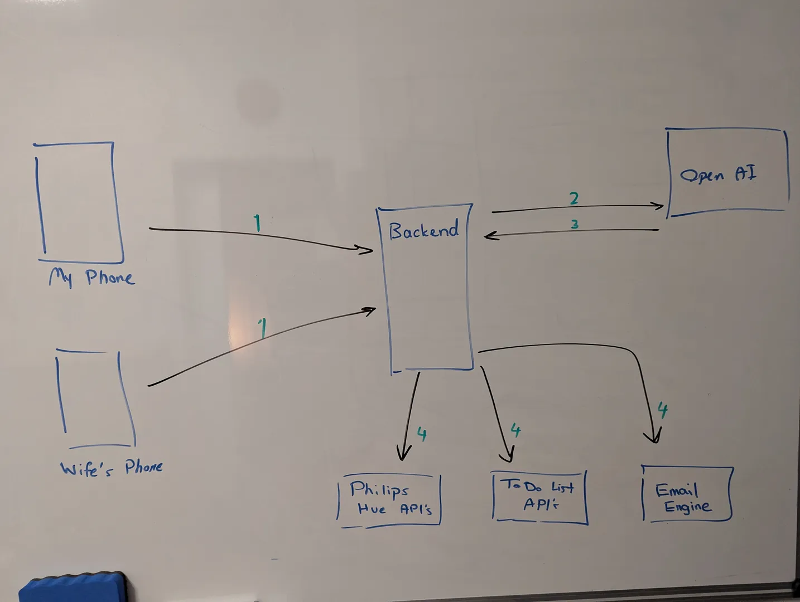

Personal Assistant with a Telegram Bot and OpenAI
March 2024
After using Alexa and Google Assistant for several years, I noticed about 90% of my interactions were always the same. I'd ask for the weather, control some smart lights, or maybe toss out the occasional random question. They were useful but only in a pretty limited way.
With all the fast progress (sometimes too fast) we've seen in AI, especially with tools like ChatGPT that can carry conversations, reason through tasks, and even generate complex content; why do voice assistants still feel stuck in 2015?
I don't have the answer, but tools like ChatGPT weren't built to control your smart home or manage daily tasks out of the box. They're designed for open-ended reasoning, not specific integrations.
- User sends a voice message through Telegram
- Voice is processed by OpenAI to understand intent and required actions
- System executes appropriate functions based on the command
- Confirmation is sent back to the user through Telegram
